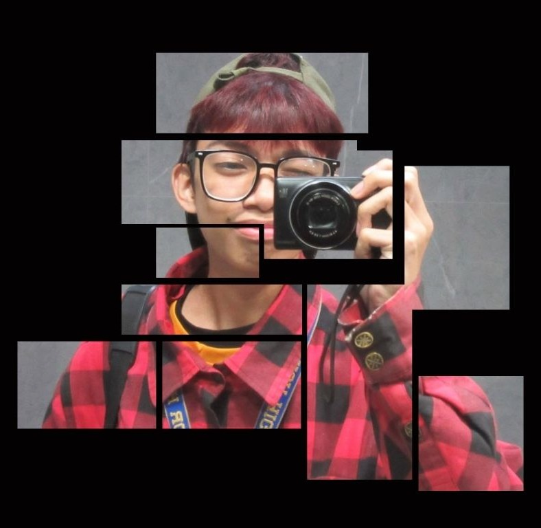

Specializing in Mobile Application & Web Development, UI/UX design, and database management. Passionate about building interactive educational solutions and leading next-generation technology initiatives.
